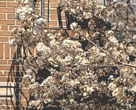
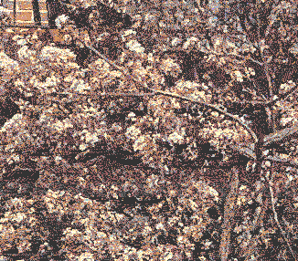
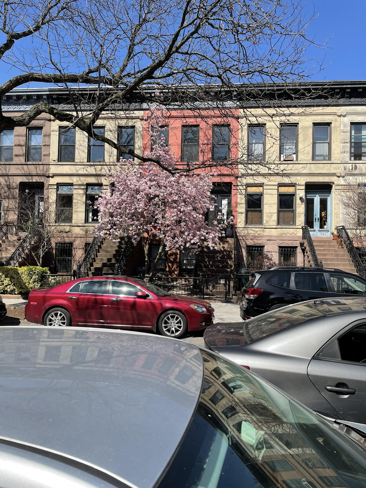
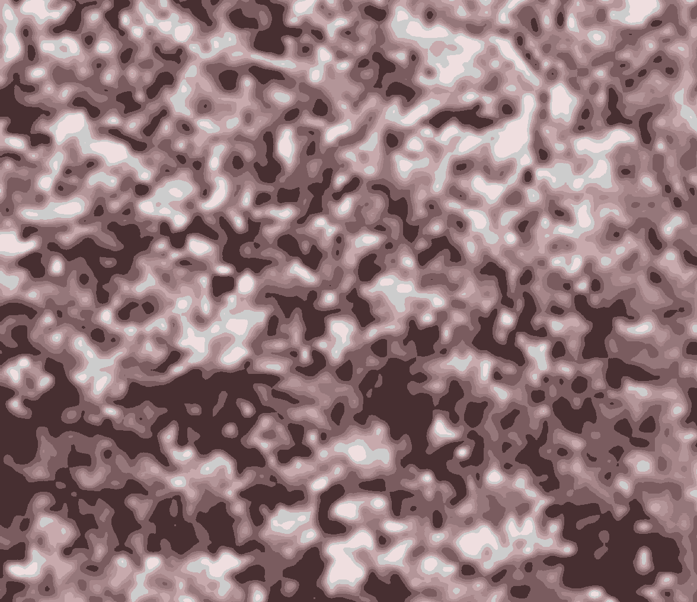
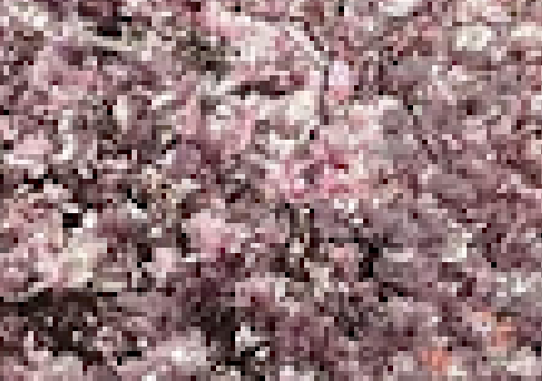
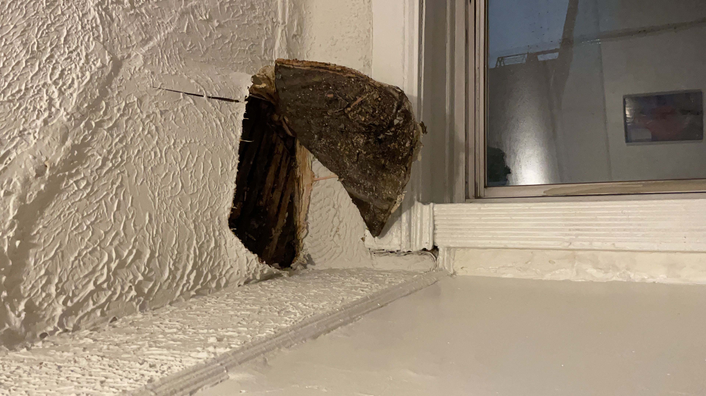
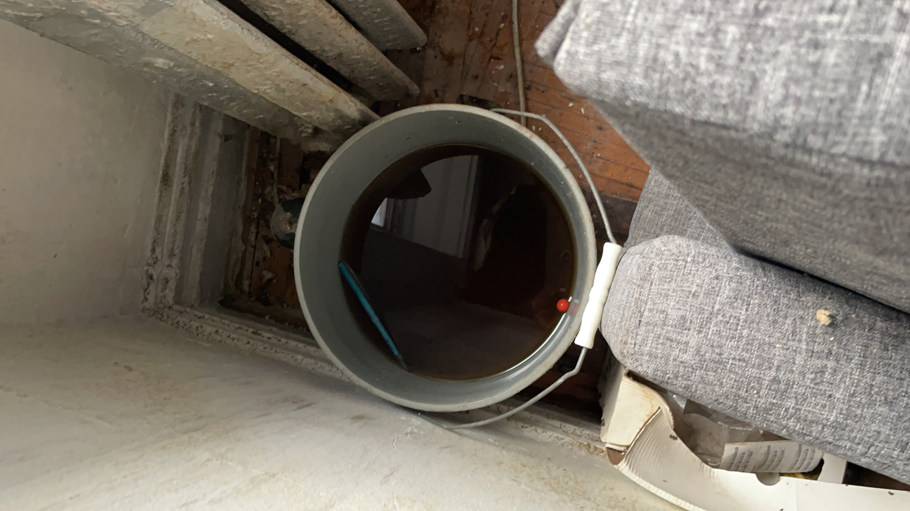

maybe in the future, somebody will find this page half-unearthed in the middle of a thriving and forest, and maybe they will read some of it and perhaps they will even glean something useful
now: i don' twant Leave site prompt at the end of 260flowers later: turn assistant off in flowers disable reset (presentation mode)lol the problem was a "src" instead of "href" in a link tag. once again its wild what happens when you step away and come back
yay that somewhat fixes it, but it's still broken in other ways
ok so now...
i'm getting a "chanes you made may not be saved" prompt when i go from 260 to 27 i do not want
also from 27 to 28 the same thing happens
and from 28 to the cosmodrome
o seems like 27flowers.html is broken
i also don't like that the assistant is there during flowers
260flowers is also broken if it's opened directly?
yeah for some reason if 260flowers is opened directly, the assistant looks weierd and the dumplings never pop up
there's a MIME error thing for dumpling.css?
also now it's hanging at the end of 27flowers?
lets fix 27flowers first
oof it's hard to recreate the bug... if i just refresh 27flowers, the dumpling is in the right spot, although the css is broken
the css issues have something to do with why the position is whack
yeah okay i'll go back to debugging the css thing from 260floers
i might have to ask ty help for this one it looks like a glue thing
ok i'm seeing that in `dist/` 260 flowers has
``
whereas in most other files it's `type="stylesheet"`. i'm not super sure how the build system works, but that looks weird
oh so `layouts/neutral.t.html` has `type="module"` instead of `type="stylesheet"`. i wonder if that's a bug. that would explain why monastery also has that dumpling.css error.
well i squashed the error but the css still seems fucked up
maybe it's a cache issue?
ok yeah idk i think there's eomthing else wrong with the template, maybe it has to do with why the dumpling isn't even showing up on Frame.show(). i think i'll just ask ty for help at the next meeting
have to fix fransquirrel in old forest
and now new forest
ok now for making it a little harder to get to
fransquirrel is too big and must be shrunken
i think my devlog for when i was trying to make animated rats might have some info
oh yeah its ffmpeg
i found this: `ffmpeg -i input.gif -vf "scale=iw/2:ih/2" output.gif`
that halves the gif in size in both dimensions, i endded up dividing by 20, and it's nice and fried
more fransquirrel
i'm making fransquirrel
so that i can be present at hosni meeting
i'll make the one where you click and it goes transparent, but also maybe just one that you can open up and have
it's in items/
noticed that flowers was broken, so i started trying to fix it
i couldn't get `npm start` to run... had to fix that by updating to the newest version of node, but that took me like 20 minutes
now to finally fix it!
for the cosmo path, I want it so that if you are "standing still doing nothing" in a certain spot, you'll start the path
it turns out if you addEventListener(), that event will stay listening even if you walk to another part of the forest. maybe this means you can get to the cosmodrome path from anywhere... that's pretty cool i think
in trying to figure out how to redirect to another page, i discovered a secret aaaaaaaaaaaaaaaaaaa. IT"S AMAZING
going to put some more time into getting good images. i think what i'll try next is running it through the web exporter first, and then just cropping down
yeah this is better.
 still not exactly what i want... i think there's a sweet spot of pixelation. i've been taking pics at a distance to get this naturally, but i wonder if i can get that in software. im sure photoshop has a way to do it
o yeah you can just do Image > Image Size...
o yeah now i'm getting into the groove. okay now it's time to stop andmove on to putting these guys in the game and making sure they actually work well
working on making some good background pics
to start, i already have one that i made earlier

really like that one. look at those little white squares
im trying to recreate this process for another image but it's not coming out nice
that's the original pic, and i want to get a nice blown up view of the flowers. when i import it into photoshop 2020 and use the Free Transform tool to scale it, it ends up looking like this
it's like a nice texture but i don't like how blurry it looks
i tried running it through the web-ifier thing that d showed us anyway. i still don't love these for what i want but they're nice in their own way
that one looks like a height map
oooo i just realizd you can replace colors. i turned a boring grey into purple. this tool is so good
anywy what i'm realizing is that what i think i want is some more blocky pixels
like this is just zooming into the image with the zoom tool in photoshop and taking a screenshot with the windows Snip & Sketch tool. this is really nice
maybe i can make photoshop scale the image better and not try to do fancy sampling
starting to work on my cosmodrome path
orignally i wanted to do the claribelle thing, but i started working on that last weekend and the conceptual overload involved in trying to wrestle with the computer implement it was too much. no thank you. ty offered to maybe work on it together sometime, that sounds nice. but i have another idea that i wanna try
for the pitch assignment i needed to make some slides for the presentation, and i thought it would be cool to blow up a photo of a pretty tree. and it was in face a nice texture. and since them i've become a little obsessed
i've been outside a lot this week which has been nice and i've taken more pics so i'm hoping i can just repeat this technique
i should mention that i was inspired to do this by darwin's central park pics
also i used d's photo editing technique in combo with blowing up pictures of flowers and it was very good
i haven't made time to reflect recently. which is a damn shame because i enjoy doing it and i enjoy reading other people's reflections. but other classes game design has been taking a lot of time and the weather's been getting nicer and lately ive been motivated to spend my energy in doing things like cleaning my appartment
anyway, as i take time to slow down on this sacred day, and skip my streaming class to write this, i'm realizing that this is perhaps one of the most meaningful parts of the project for me
this weekend, i tried to implement the ability for claribelle to walk to other places. currently she's confined to the computer. she can escape from her date, but she can't truly escape. being able to make her walk everywhere would be oviously awesome, and would give me a path to the cosmodrome
but as i started to implement it, i started to realize how much work it would be... and my mind started to wander to reflect on super spaceport as a whole and i started writing notes about our processes etc. later in the weekend, i gave it a stab. since then it's been stressful to think about. and you know what, i don't need that noise. so i'm abandoning it. i have another idea that i think would involve less coding and be more fulfilling
last week i spent an hour or so most days thinking/experimenting with persistent windows (the idea that you can "carry a window with you" when you click on a link and go to a different part of the forest/website). i didn't get very far. i felt like i got into a loop of "well to test this, i'd have to manually refactor a lot of pages... let me try another way" until i thought of three or so implementation ideas but never really tested any of them out. i think it might be better to wait until we're all grouped anyway, but i feel like i used more energy hem-hawing than i needed to.
i've been feeling pretty low on energy/motivation in general. i feel like i've barely done any work for the last week and a half. i think a lot of this is bc shit sucks, generally and personally. but i've been letting myself mope and it's nice that i have that luxury. it's been exciting to see my colleagues do interesting work and just watch
i'm still on the persistent windows train. i think i might continue to work on it a litle leading up to Friday, which is when we're planning to get together and work on it together
i found special.fish and gossipsweb.net this weekend through the "web art jam" that happened. i've been fantasizing about a non-corporate controlled internet a lot recently. thinking about how the internet really is structured in a certain way, that it's not a space that you can walk around in, everything is linked and directed. and it's been pretty inspiring to see the sites made in that jam and also the other sites i stumbled upon this weekened. d or mut said that the "web is my favorite game engine" and yeah.
ty brought up an interesting question of "are we learning game design" and yeah idk. i mean, yes we definitely are. maybe not good game design for commerical games. but who would even want to make hades anyway ew
forgot to do reflections last week
last week, i did the claribelle thing where i made it so that she could escape from alidator onto the computer. it took my collegues ~half a week to discover it. ty thought it was a bug at first. that made me happy. it did take a lot of work though.
this week we played magic wand by thecatamites and it made me think about how you can do a lot and maybe have a better time if you don't program things when you don't feel like programming. i think going forward, i want to try to lean away from "going off and doing my own thing." maybe sometimes i still will, but it's just kind of exhausting and lonely
this week, i've been spending a lot of time outside, mostly walking around. i've been feeling pretty burnt out/exhausted from the MFA and it's been nice to shirk my responsibilities for a couple days and walk and bike and nap and waste time alone or with friends
this project is turning out really cool. i am continuously inspired and excited by the work that my colleagues do. our discord is my favorite social media
i guess we're at about the halfway point. i cant believe we don't have a fucking spring break
lets try to make claribelle walk in the computer
i've become fixated on this idea. went for a walk after lunch and tried to take a nap but i couldn't.
we did a group debugging today which was nice. although i feel mixed on it bc i could debug on my own and i feel like we're wasting precious meeting time
anyways, ty added some nifty namespace stuff to the event system. i wonder if this fixed the bug as a side effect.
holy fuck i think it did hell yeah
thanks ty :)
maybe eventually i can add an event so that you walk "out" of the computer when you try to go left or right off screen of the deli. i feel makes it cooler, but also more hidden to player
ok now i need to make bitsy jenny and code the fake bitsy movement logic
her name is claribelle and she's coming for your lunch money
going to try again. i was just messing around and got an idea to make it so that you can walk out of the alidator game into the parent computer. not sure if this is possible, but i think i'll learn something
if this works, i think i want to make it so that you can then walk around the computer and enter the forest icon, which is actually cyberspace. but yeah we'll see if this even works
i've run into a bug "Event is not a constructor". sad. I'm going to comment out my code for now, i have gamer studies in a few minutes
once again it is tuesday night and i haven't done shit this week. i told myself that i would only work on this project when i wanted to but it just keeps getting pushed around by other responsiblities so i never carve out time. i guess i'll carve some time out of my sleep now. cool cool cool
maybe if it wasn't the third week in a row that i didn't do anything, i'd just go to sleep. but i don't like feeling like i'm not participating.
anyway: the idea is to render a part of the narrative that jenny wrote into an interactive thing. hopefully i can experiment with a window concept or some other concept we've talked about. i'll openjen's narrative and the miro
i jus saw that mut is using domino for their notes that's v cool
ok so jenny's narrative great
yeah not really sure how we're going to do this
first we need a nother icon in the computer to enter cyberspace. or maybe you put your hand on it or something
i dont have to do all of cyberspace. i'll give myself like an hour to try to get something
o shit darwin's doing one of those custom html tags the mad lad
ok so the question is -> I want the player to feel like they're moving through to another space. what would be cool hough is if they... felt like they could still "step away" from the computer?? hmmm
yeah yeah this icon is different from the other icons because clicking on this will make you actually enter a new space. lets test out that window ontology research
i should have like a cool transition. and the music should change too. but i'm not gonna do that tn hell no
no wait you know what, i know what i'm gonna do
hm iframes are iframes
i'm not gonna get the effect i wanted. just gonna go to sleep. this was fun though i'm excited to get back on it some other day
i didn't really do much work this week. again.
we're moving towards having a more intentional narrative for our game. we spent a lot of time this week talking about what that means. Jenny wrote a story outline which is super exciting. its weird, in the past i've been frustrated about having to be the guy that implements other people's ideas, but now i'm excited to interpret jenny's writing into something.
but yeah i haven't had time/motivation to work on this at all. i had the pico 8 workshop that took up a lot of time to prep for... this is the second week in a row where i haven't really "practiced" in the art school sense of practice. im sad i love to make things. maybe this week will be better
either way, we also started a discord server this week for our group. by "we", i mean mut. its really cool. its just nice to see what my colleagues are into at any given point. i want to get into the habit of reaching for that group when i want to waste time, instead of like instagram or twitter. not only are the links that we share more aligned with what im interested in, its also more meaningful that its from people that i know and like.
this week, we had a gather phase where we put our games together. what it means to put our games together, in more specific terms, was the subject of our conversations and experiements. i say "our", but i didn't do much work this week. I participated in our discussions and one time where we did a group code for something, but i didn't work any experiments on my own. I was catching up on other work this week, and that sapped all my energy.
but my colleagues have produced some interesting prototypes for different ways that our games can interact with eachother. they're pretty cool in their own rights, and have been really helpful as references for our conversations this week on how we want to take this gathering idea further.
we're still in a vague conceptual land when talking about how we're going to put things together, although the end of this week we started moving towards more concrete proofs-of-concept. hopefully this week i can do/participate in one of these experiments
first, i'll talk about our "output", and then i'll reflect on how it felt
i'm pretty pleased by the artifacts that we've created this week. we all somehow managed to find time and energy to make one game each. and then on friday we put them together. the result is pretty amazing. each game shows the interests and talent of the individual that made it. knowing my colleagues, I could tell you who made each one just by playing them. (the one that is the most surprising to me is Ty's. it's a wonderful poem-game, and i would say his poem-blogpost is a part of the piece too. I think it's just a side of Ty that i didn't know. ah, humans.) a variety of tools are used. I think me and Ty are the only ones who used the "same tool" (if you could call vanilla js/html a tool).
as for my game personally, i'm proud of what i've made. it's a pretty pared down expression of the idea that i was going for, it relates to the inspiring image somewhat, and the central feature of it, the audio leak, is a happy accident where i let the material that i was working with (javascript/html) inform the design
collectively, they're all interesting and great games in of themselves, and just putting them together "naively" in draggable iframes (using d's drag code!) works for making an interactive c0llage. you can sort of click into a game, play it for a bit... wander over to another game... get annoyued by the drip sound and scramble to stop it... if you know the reference image, you can see the connection, and if you don't that's okay too. the c0llage creates something meaningful
so i guess that's it. we did it. we found a good process. we're done for the semester
the process felt meaningful and enjoyable to me too. i enjoyed being able to have my little corner of the website where i could do what i wanted without having to make creative compromises.
i liked checking in to the website/github repo and seeing what people were working on.
i like haunting. it felt wrong and fun and playful, and a way to interact with my colleague's work. Ty said he liked the haunting so that's good... i wasn't sure if it would be annoying. i tried not to do too much. and i wonder if i myself was haunted, if i would take it so well...
i find myself getting pretty invested/energized by this project. i think the dark side to that is that it's making me somewhat anxious about wanting to make sure things keep "going well." i think i need to chill somewhat. it's just strange and suspicious how well this is going
one thing that is worth mentioning is that i had a pretty anomolous week last week in terms of my personal life. i don't want to get too into it, but i'm wondering how much of my "productivity" and enjoyment last week was due to factors outside of our process, like i had more time and energy in some ways. a couple people mentioned that they didn't feel motivated to for ex. do a haunt, or work on their game more/earlier. and the ibvious implication is that they wish they had felt motivated to put in more work... and yeah i'm also not sure what the solution to that is. how much of it has to do with the process and how much of it is just that Game Design I took up approximately 8092348098 hours of our time last week, and left us with no energy to do anything else? (i mostly shirked my responsibilities to my Game Design I group last week!!). i could say more about how i think this program overworks us to everyone's detriment, but i won't
along the same lines, i'm sensing that some of my colleagues are struggling with the more technical side of things. i think that it might be a good idea to try to listen more to my colleagues needs, and try to help them with those. during our meeting on friday, jenny was sad that she couldn't get her LOVE game to run. while we were talking, darwin figured it out. he just sort of went ahead and did it. i think that was a really cool and important moment
i am thiking ghost thoughts
it is easier to haunt someone when their process/tools are more open/apparent/accessible. ty was pretty easy to haunt bc his game is raw html/js and i did that for my game so i could grok his version more easily. d is doing a twine game, so i guess she's using Twine lol. the only thing i have is the exported html. should i try to reverse it somehow.... my head hurts
o i wonder if i can import it into twine. god i hope this works
oh my fucking god yes
before i ruin this lovely walking simulator, i'll do something helpful????
oh god twine. i have to figure out what syntax d is using
I JUST WANT TO KNOW THE FUCKING FOMRAT
maybe it doesnt matter maybe im dumb
no it DOES matter
sugarcube is the one she's using i think
when you first open this up, it shows $lastlocation in plaintext without doing the "right" thing of substituting it with the number etc. etc. you get it. i was going to "fix" it but i actually like it... it's like a beauty mark.it points to something gross and complicated that is happening beneath the surface. its mostly working and coming together to form this cohesive, delicately-balanced whole. there are milions of little microbes on your face and there is code that makes this twine game work
"Scientists have known that humans carry face mites for a long time". um when were you going to tell us, Scientists?
look at this guy
also after thinking about it for 2 seconds, this is probably just debug text that d is going ot get rid for the final thing anyway
ok lets do a haunt so i can go to sleep
when ur haunting it's important to not change any more than u need to
i love what d has done
heheheheheheheheheheheheehehehehehehehehe
lol i'm gonna fuck up d's beautiful story web
o boy i sure hope i didn't fuck this all up for d
this whole thing has only made my headache worse
i'm doing the wrong with with the audio, and so instead of playing the drip sound once, it just keeps playing it over and over again. also i think i'm not cleaning up the drop objects when they're done? i kind of like how it creats this audio leak and memory leak though. now we're making art
also this gives me an idea for how to haunt
collecting the drops with the bucket should still stop or stimmie the leak somehow. so i should still figure out how to play the audio properly then
im pretty satisfied with where it is now. maybe i want to represent the puddle with an image... and maybe the floor too?? and most importantly, change the bucket to a cup and let you drink it. idk if i'll have time though. i'd rather try to do some haunting
i renamed it "free juice" but i'm wondering if i should change it back to "leak". "free juice" ties it to the inspiring image free salad, and would help with haveing more cohesion among our games. but it's a little confusing when looking at the game in a vaccuum... "leak" does a lot more conceptual work as a title
the leak starts small but grows over time
the drip from the leak varies in intensity/frequency. sometimes its like drip...drip...drip... soemtimes its like ddripdripdripdripdrip
without a bucket, the water will just pool on the ground (eventually cause a second leak??)
the water is brown and gunky
taste still unknown
there should be leaves in the bucket
d has a pretty nifty way of dragging elements around so i think that's what i'll start with
o and ty has a pretty nice game framework....
ok the next thing is to ake a drawSprite func that is basically just style.left = x etc. and keep the x and y in our own objects
lol it drips. the sound is broken but in a good way
we decided on our process for the week and now we're gonna make some games
this comic makes me weak. it's very good. the first thing i thought of was a leak that i had in my apartment the past week.
 some questions that naturally arose in me were "where did this pen come from?" and "i wonder what this water tastes like"
i've been wanting to make a game about something boring or mundane. like mumblecore but videogames. or as Ty poetically put it "an exceedingly beautiful corner." i kind of just want to simulate a leak in your ceiling
tools-wise, i think i want to try to do this with html and javascript and without using the html5 canvas. i've been pretty jazzed on making games for the web for the past year or so. it pains me that games made with Unity are so heavy and make my laptop hot. we were talking about tools and at one point someone joked "yeah we should write our own 2d game engine for the web" and the joke is that that would really dumb bc who has the time for that and i laughed bc yeah, we've all been there lol. unless...
i kind of want to try to do something with a similar materiality to walky.space. most web games/interactive arts use the HTML5 canvas, but walky does not. it's just moving divs around. this sort of material is really cool to me. the thing is that walky uses React, and i wonder why. i don't want to use React, it feels like too much...
hopefully this idea isn't too much work to pull off. i'd like to have something to show earlier in the week so that it can get haunted and so that i have time to do some haunting.